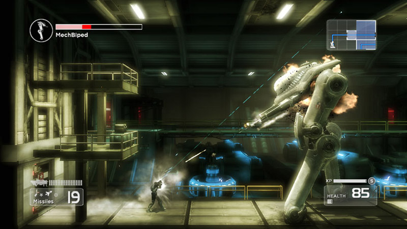
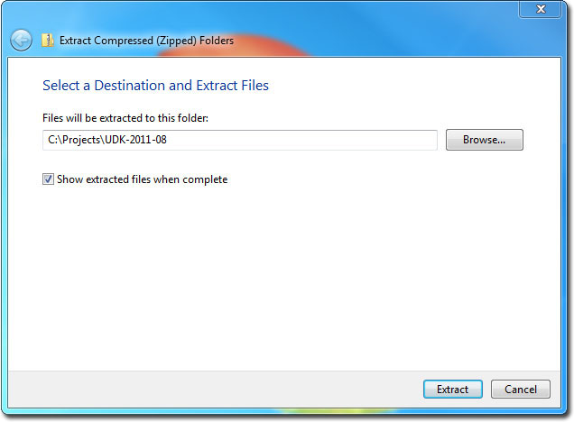
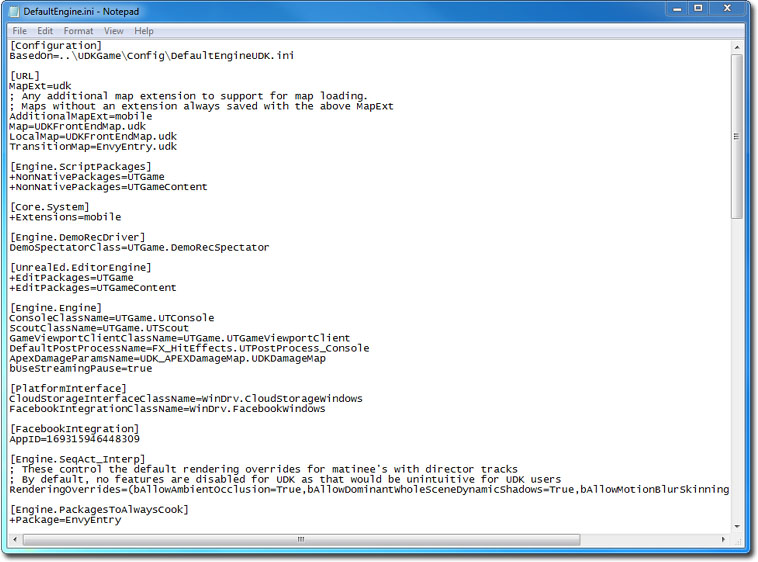
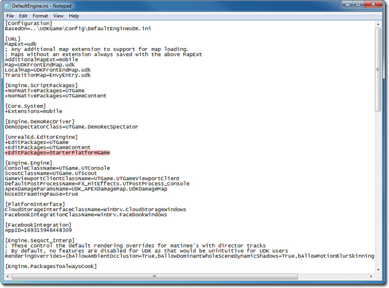
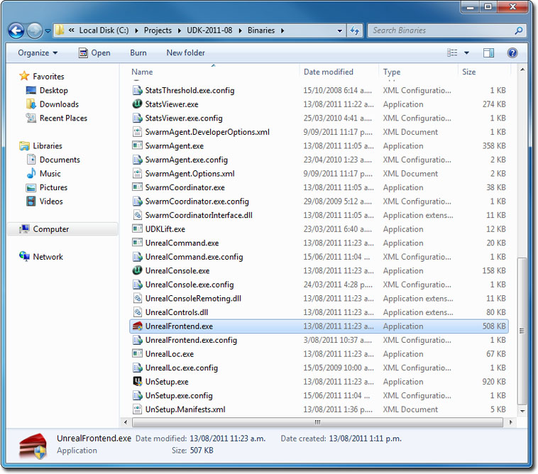
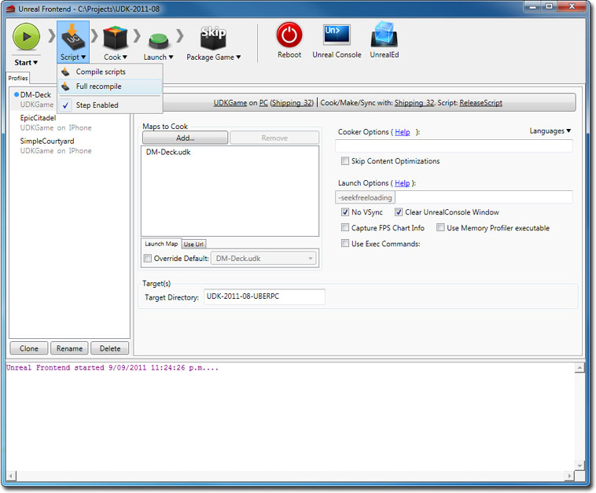
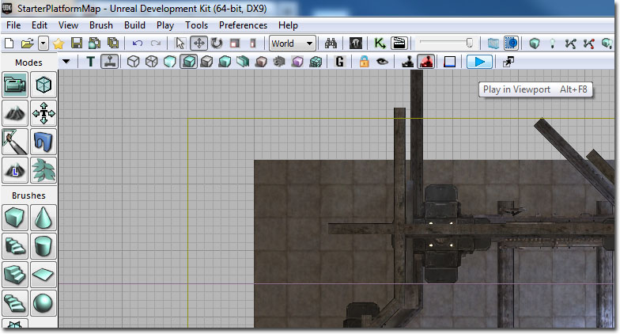
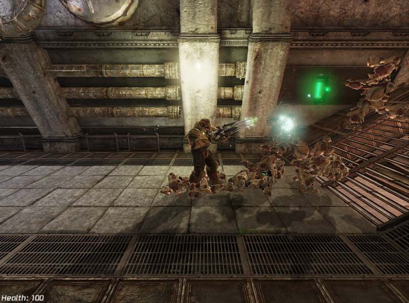

UDN
Search public documentation:
DevelopmentKitGemsPlatformerStarterKitCH
English Translation
日本語訳
한국어
Interested in the Unreal Engine?
Visit the Unreal Technology site.
Looking for jobs and company info?
Check out the Epic games site.
Questions about support via UDN?
Contact the UDN Staff
日本語訳
한국어
Interested in the Unreal Engine?
Visit the Unreal Technology site.
Looking for jobs and company info?
Check out the Epic games site.
Questions about support via UDN?
Contact the UDN Staff
平台游戏初学者工具包
于 2011 年 6 月对 UDK 进行最后测试
概述
这个初学者工具包中包含可以作为开发一款横向卷轴平台游戏（例如 Shadow Complex（多重阴影））的切入点的示例代码。

包含哪些内容？
- 非玩家控制器 pawn (SPG_AIPawn) - 该 NPC pawn 可以追赶这个玩家。当它撞到玩家后，它将会爆炸，同时会对玩家造成伤害。玩家不得不向它们射击，以此避免被它们杀死。
- 横向卷轴相机 (SPG_Camera + SPG_CameraProperties) - 该相机向玩家的位置添加了存储在 SPG_CameraProperties 中的偏移量。然后它会调整相机的旋转量，使其面向玩家，生成一个横向卷轴相机。
- 使用 pawn 和武器原型的游戏信息 (SPG_GameInfo) - 该游戏信息会为玩家创建一个 pawn 原型并为玩家提供武器原型。在这里使用原型，因为它允许游戏设计师快速调节参数，不需要重新编译。
- 武器库管理器 (SPG_InventoryManager) - 默认情况下武器库管理器不可以在原型的基础上生成武器库。
- 玩家控制器 (SPG_PlayerController) - 该玩家控制器会锁定运动轴，同时处理玩家旋转。
- 玩家 pawn (SPG_PlayerPawn) - 该玩家 pawn 可以像平台 pawn 一样处理转向，只可以在左右之间插入。它还可以处理向上和向下瞄准。它还包含可以控制武器射弹应该从哪里开始开火的代码。
- 武器 (SPG_Weapon) - 这个武器类可以像已经在虚幻编辑器中存在的大多数属性一样进行设计。它还可以控制网格物体附件以及玩家使用武器时的特效和声音。
- HUD (SPG_HUD) - 可以显示玩家的 pawn 生命值的简单 HUD。
- 拾取 (SPG_HealthPickup) - 在 NPC 死亡时随机掉落的物品的简单拾取。
代码结构
相机的工作原理
相机通过在 SPG_Camera 设置相机的位置和旋转量来运转。具体使用哪一个相机类在 PlayerController 中进行定义。在 SPG_PlayerController 内部，注意 SPG_Camera 在默认属性中是如何定义的。 对渲染的每一帧，调用 UpdateViewTarget 函数。SPG_Camera 会将相机位置设置为目标的位置，通常是玩家的 pawn，以及存储在 SPG_CameraProperties 的原型中的 CameraOffset。进行这项操作后可以在虚幻编辑器中对相机偏移量进行快速调节，不需要重新编译源代码。 最后，可以通过将相机对准目标位置设置相机的旋转量。这样可以确保相机始终对准目标，无论偏移量是多少。游戏的工作原理
当在虚幻编辑器中玩游戏时通过虚幻编辑器设置游戏信息。您可能需要调整配置文件，将它作为默认的游戏类型。SPG_GameInfo 可以将参考信息存储为两个原型，一个是玩家的 pawn，另一个是玩家的默认武器。在这里使用原型可以在虚幻编辑器中进行快速调节，不需要重新编译源代码。 当玩家需要 pawn 时，会调用 SpawnDefaultPawnFor。在这里生成玩家 pawn 原型，并将其赋给玩家。 在将默认武器库赋给 pawn 时，系统会将武器原型赋给这个 pawn。 SPG_GameInfo 还可以在默认属性中定义玩家控制器和 HUD 类。非玩家控制的 pawn 工作原理
在这个初学者工具包中，有一些 pawn 只会您的方位跑而且碰到就会爆炸。因为只需要简单的逻辑，根本不需要 AIController。 默认情况下，将 pawn 的物理模式设置为下落。这样可以确保在空中生成的 pawn 可以下落到地面上。当 pawn 着陆到地面或另一个 actor 后，会调用 Landed 事件。在调用这个事件后，会将 pawn 的物理模式设置为 PHYS_Flying。这样可以使速度和加速度的简单调节变得更加容易，确保 pawn 会追逐玩家。 在每一次更新时，NPC pawn 都会检查是否有敌人。如果没有，它会通过查看任何本地玩家控制器及其 pawn 分配一个敌人。如果有敌人而且是飞着的，那么它将会设置它的旋转量，面向敌人。它还会设置它的速度和加速度，向敌人移动。 当 pawn 被伤死后，它会调用 PlayDying 函数。PlayDying 函数会启用骨架网格物体的布娃娃模式。 如果每次机会都会生成一个掉落物；那么使用引用的原型创建它。 当 pawn 撞到玩家 player pawn 后，它只会发生爆炸，造成伤害，然后自我毁灭。玩家控制的工作原理
玩家控制在 SPG_PlayerController.PlayerWalking.PlayerMove 中进行。通过使用相机旋转轴，我们可以使用相机视图坐标确保这个 pawn 移动。由于这是横向卷轴游戏，所以只需要 Y 轴和需要 aStrafe 值。它可以强制要求玩家只可以移动到左边或者右边。 当玩家在任意方向移动的时候，会设置所需的旋转量。这样可以确保玩家根据运动向左边或右边看。 通常，在 UpdateRotation 中，鼠标 X 和鼠标 Y 都要进行处理，但是因为自动发生偏转，所以只需要处理鼠标 Y。这个实例中的鼠标 Y 将会控制 pawn 的倾斜度。然后会将它传递给这个 pawn。 在 SPG_Pawn 中，通过旋转这个 pawn 进行偏转，同时通过在这个 pawn 的骨架网格物体组件的动画树中调节动画偏移量动画节点进行倾斜。目标偏移量动画节点在玩家的 pawn 和可以正常工作的不同目标姿势之间。查看动画节点进一步了解相关说明。武器的工作原理
这个初学者工具包中的武器的工作原理与虚幻竞技场 3 中的武器工作原理非常相近。 第一次生成武器并将其赋予玩家的时候，会执行 ClientGivenTo。在这里，SPG_Weapon 会将第三人称武器网格物体附加给这个玩家的 pawn。 当玩家使用这个武器时，它会将它发送到最终会调用 ProjectileFire 的相应开火状态。射弹的生成位置和旋转量可以从玩家 pawn 的 GetWeaponStartTraceLocation 和 GetAdjustedAimFor 函数中得到。在 SPG_PlayerPawn 实例中，它只会返回插槽的位置和旋转量。这样可以确保射弹从正确的地方开火，而且在正确的方向飞离。 在使用武器时，调用了 PlayFireEffects，它会激活枪口火焰。当武器停止开火时，调用了 StopFireEffects，它会使枪口火焰变为非激活状态。为什么使用单独的玩家 pawn
在这个初学者工具包中使用的是一个单独玩家 pawn，因为有一些功能只适用于这个玩家 pawn，例如，向上和向下瞄准。由于这些不适用于 NPC，所以决定将其隔离出来。它还可以使用一个简单的方法检查这个 pawn 是否属于玩家，虽然本可以通过检查这个 pawn 的控制器轻松进行检查。如何使用这个初学者工具包
- 下载 UDK。
- 安装 UDK。
- 下载 zip 文件。
- 将内容解压缩到您的 UDK 基础目录中。（ 例如 C:\Projects\UDK-2011-08\）Windows 通知您可能会覆盖现有文件或文件夹。一直点击 Ok。

- 使用 Notepad 打开 UDKGame\Config 目录里面的 DefaultEngine.ini 。（ 例如 C:\Projects\UDK-2011-08\UDKGame\Config\DefaultEngine.ini）

- 搜索 EditPackages 。

- 添加 +EditPackages=StarterPlatformGame

- 启动 Binaries 目录中的 Unreal Frontend Application 。（ 例如 C:\Projects\UDK-2011-08\Binaries\UnrealFrontend.exe）

- 点击 Script（脚本） ，然后 Full Recompile（完全重新编译） 。

- 您应该可以看到 StarterPlatformGame 包是最后一个进行编译的。

- 点击 UnrealEd（虚幻编辑器） 打开虚幻编辑器。

- 点击 Open（打开） 按钮，打开 StarterPlatformMap.udk 。


- 点击 Play In Editor（在编辑器中播放） 按钮学习平台游戏初学者工具包。

下载

- 下载这个初学者工具包的代码和内容。